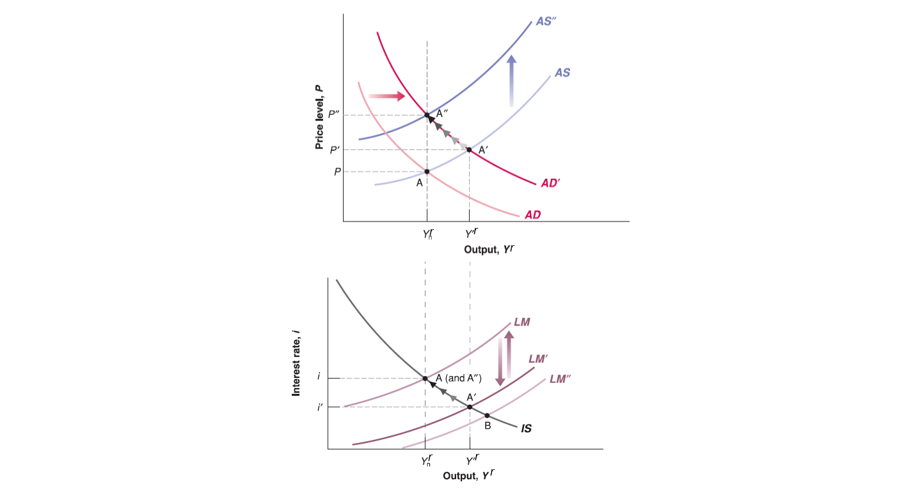

Lecture 15: Fiscal, Monetary Policy and Labor Market Condition in Medium Run
Mingze Huang
2021-07-28
Fiscal Policy in Medium Run on AS-AD Model (Deficit Reduction)

Fiscal Policy in Medium Run on IS-LM Model (Deficit Reduction)

Monetary Policy in Medium Run on AS-AD Model (Monetary Expansion)

Monetary Policy in Medium Run on IS-LM Model (Monetary Expansion)

Effects on Natural Rate of Unemployment on Labor Market Equilibrium

Effects on Natural Rate of Unemployment on Labor Market Equilibrium

Effects on Natural Rate of Unemployment on AS-AD Model